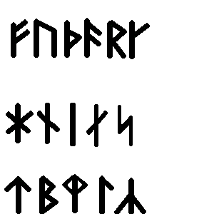

Links
HomeAbout
About Stáv
principles
martial aspects
healing aspects
philosophies
runes
stances
About Ice & Fire
Find Local Clubs
Join
Events
Worldwide Stáv Events
Contact Us
Blogs
Fall '06 Stáv Weekend Blog
Stáv Blog (Miki)
Products
CafePress Shop
Books/Memberships/Etc
Links
Ice and Fire UK
Stáv-International

What is Stáv
The Runes
About the Runes
The Runes are angular letters that were cut into wood, stone and metal, and later written on parchment and paper.
There is no clear-cut definition for the word, and it seems to be more of a metaphor referring to a mystery, secret or portent, rather than a single word.
Many Runic alphabets existed over the centuries. The one used in the Stav system is the Younger, or Danish Futhork. (Futhork means alphabet). It was developed from the Elder Futhork, went into popular use around the eighth century and has been in continuous use thereafter.
The Runes of the Younger Futhork

Use of the Runes in Stav
The main use of the Runes in Stav is through the Stances.
In addition, each Rune has a wealth of associations connected to it, such as deities, principles, herbs, trees, numerology as well as the many and symbolic meanings of their names. This allows the Runes to be used as refference points to all the principles and philosophies in Stav. It also enables their use as tools for healing and divination.